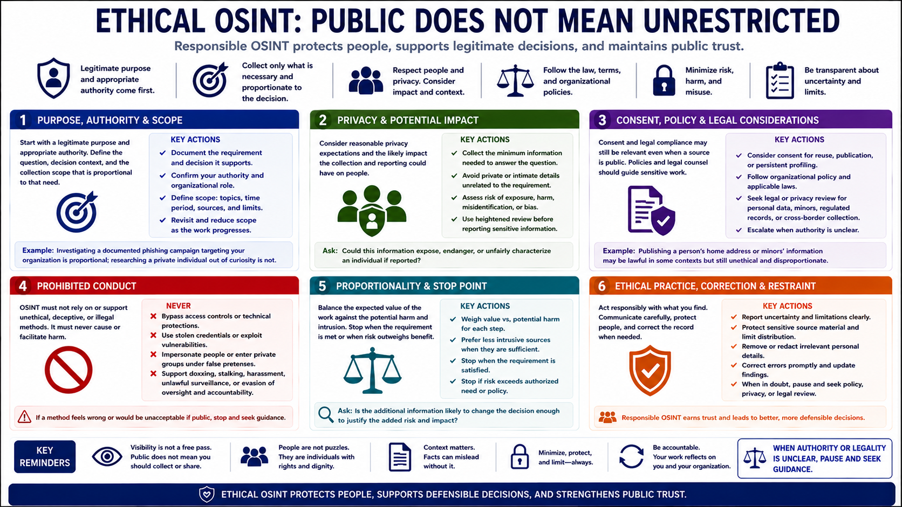

Ethics, Privacy, and Legal Boundaries
Connecting to LMS... Progress: in progress

Narration
Public availability does not mean unrestricted use. Information may be visible but still sensitive, misleading outside context, protected by terms or law, or harmful when aggregated. Ethical OSINT begins with a legitimate purpose, appropriate authority, and a collection scope proportional to the decision.
Consider reasonable privacy expectations and the likely impact on people. Collect the minimum information needed, avoid private or intimate details unrelated to the requirement, and use heightened review before reporting information that could expose, endanger, or unfairly characterize an individual.
Consent may be relevant even when a source is public, especially for reuse, publication, or persistent profiling. Organizational policy and legal counsel should guide work involving personal data, minors, regulated records, cross-border collection, or consequential decisions.
OSINT does not authorize bypassing access controls, using stolen credentials, impersonating people, entering private groups under false pretenses, or exploiting technical weaknesses. It must not support doxxing, stalking, harassment, unlawful surveillance, or evasion of accountable oversight.
Proportionality asks whether the expected value justifies the collection and potential harm. A defensive investigation of a documented threat has a different basis from curiosity about a private person. Stop when the requirement is satisfied or when risk exceeds authorized need.
Ethical practice includes correction and restraint. Report uncertainty, protect sensitive source material, limit distribution, and remove irrelevant personal details. When authority or legality is unclear, pause and seek policy, privacy, or legal review rather than stretching the meaning of public.